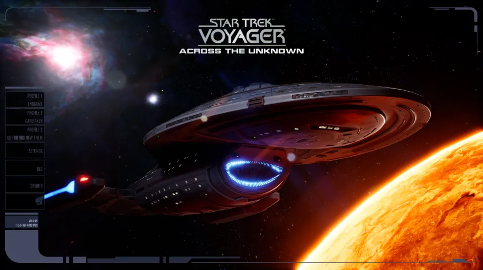
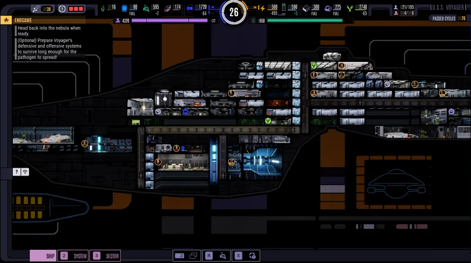

@c6reviews.
@c6reviews.
With Star Trek's 60th anniversary set up to be a disappointment – with no new shows in production and a seeming disinterest in the franchise by its new owners – we are left with a few side projects here and there that are sincerely worth our time to explore. One of those projects is the new story-driven survival strategy game Across the Unknown, based on Star Trek: Voyager.
Released on February 18, 2026 by German game developer Gamexcite, “Across the Unknown” lets you re-live the iconic journey of the intrepid USS Voyager across the Delta Quadrant on its long trek home to Earth. Will you make the same decisions as Janeway and her crew, or will you change the story and explore other opportunities? Each decision you make will impact your story, and ultimately have lasting repercussions for your crew. Can you balance maintenance, scientific research, and exploration while keeping up morale by providing for your crew's needs and making positive progress toward your imperative of reaching Earth?
I will spare you any further preamble about the game – you can look up the details yourself – and I'll just jump right in to my experience. Now, I feel like I should say that I am not a “professional” gamer or game reviewer. I'm just an average guy who is going to share his average thoughts about the game, and I won't be getting deep into game mechanics and balancing and all that.
I have completed two full play-throughs of the game. Well, technically three play-throughs, if you count the one where I just used the Caretaker's array to get home right at the beginning of the game. I ran my first game on Survival mode, which is the sort of middle-ground difficulty level that the game was mostly intended to be played at. Other options are Adventure mode (easy) and Years of Hell mode (difficult). In Survival mode, I found the game to provide sufficient challenge in maintaining resources and morale without it being unmanageable. I was successful in the primary missions and many of the side-quests, and only had to abandon a few due to resource constraints. It felt like a fair balance of “you win some, you lose some”.

I imagine anyone's experience their first time playing this game will be vastly different depending on whether they've watched the series Star Trek: Voyager before or not. My first time through, I obediently “stuck to the script” – that is, I made almost all the same decisions that were made in the TV series, so that I could experience this game's version of those events. I also focused heavily on engineering and scientific research to improve my ship's technologies. I provided what I felt was sufficient defensive capabilities for the ship, but I did not put research into advanced weaponry. That's the Starfleet way, is it not? Surely I could overcome any obstacles with my scientific prowess.
Well, not so much. When I reached “Endgame”, my ship was unable to contend with the powerful Borg armada protecting the trans-warp hub... even with Admiral Janeway's advanced technology from the future, how rude! I drained the entire sector dry for resources to improve my offensive capabilities, but ultimately I was forced to move on and make my crew endure another 16 years before reaching Earth.
My second play-through was different. I chose Adventure mode so that I could focus less on resource scarcity and focus more on the story, and trying new options that didn't actually happen in the TV series. I recruited fully-Klingon B'Elanna Torres! I researched and built a cloaking device! And I made Chakotay sacrifice himself for the good of the crew! Mwahahah! Ahem, sorry. Anyway, this time I was prepared for the final battle and I effected a (mostly) canon ending that got the crew home and saw the destruction of the Borg trans-warp hub. Hooray!
And now, well, I kind of feel like I've done what I wanted to do with the game. Replayability? Sure, there's other choices I could make, other achievements I could obtain, and other endings I could see... but for me, twice was enough for now. The game will likely sit in my library for at least a few months, perhaps years, before I might decide to pick it up again and try a third journey. Let me just bullet-point some pros and cons for you.
- Original Voyager theme music, sounds, and characters.
- Guest actors Tim Russ and Robert Duncan McNeill reprise their roles as Tuvok and Tom Paris, providing log entry voiceovers at each new sector. I suppose, however, that you could consider it a con that these are the only voiceovers and the majority of the game is just text.
- Lots of ways to play and choices to make. Follow the same path as the TV series, or forge your own.
- There really needs to be a “fast-track” mode for the first mission which skips all that required tutorial stuff. It's great for your first game, but after that, it makes it frustrating to get a new game started. You can hold the left mouse button to skip entire sections of dialogue, but even that takes a considerable amount of time when you'd likely rather just jump right in.
- Ship battles are... clunky. There may be a little skill involved, but it seems to mostly boil down to the strength of your defensive systems and crew. In fact, there is an “auto-resolve” option that will essentially just roll a die to determine the outcome based on relative ship strength and how many torpedoes you want to use up. In my second play-through on Adventure mode, I used auto-resolve on almost every battle rather than endure the time-consuming and clunky-feeling mechanics.
- This is minor, but I quickly got tired of doing the right-click-hold on every single thing in the sector in order to scan it. Scanning doesn't consume resources or cycles, so it just became a tedious and unnecessary mouse exercise.
Overall, I enjoyed it. I mean, I did play it through twice, after all. They did make the controversial decision of releasing the game with “Day 1 DLC”, which makes most people assume that they just took five missions out of the base game and put them behind a paywall for an extra money grab... which is ironic, because they also released the game with no mention of the Delta Flyer, only to add it in to the base game along with some new missions for free on May 18. Oh, but they do make use of the aeroshuttle, the large auxiliary craft that was supposed to be attached to the ventral side of Voyager's hull, but that was never mentioned in the actual show. Strange!
If you are nostalgic for some good ol' 90s Star Trek and need a good game to play, go for it, but maybe wait for it to go on sale. ◼